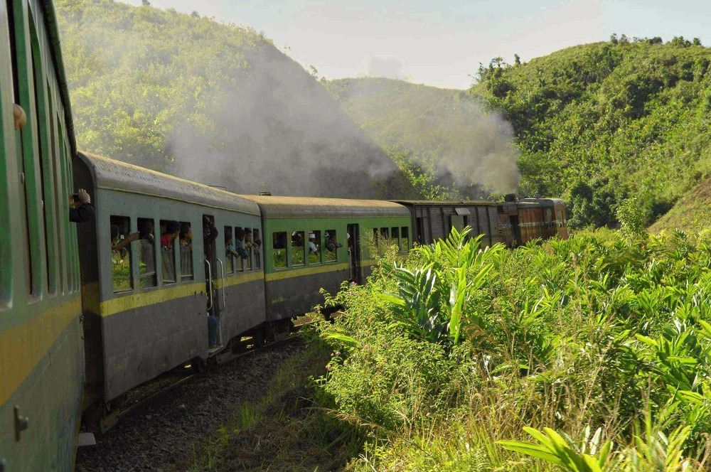

Le chemin de fer Fianarantsoa-Côte Est

Le FCE (Fianarantsoa-Côte Est) est l'une des lignes de chemin de fer les plus pittoresques de Madagascar. Inaugurée en 1936, cette ligne relie Fianarantsoa à Manakara sur la côte est, sur une distance de 163 km.
Caractéristiques
- Trajet de 12 heures à travers des paysages variés
- Passage par 67 ponts et 48 tunnels
- Départ tous les mardis et samedis de Fianarantsoa
- Retour les mercredis et dimanches de Manakara
Conseils aux voyageurs
Il est recommandé de réserver à l'avance, surtout en haute saison. Prévoyez de l'eau et de la nourriture pour le voyage, ainsi que des vêtements chauds pour traverser les hauts plateaux.